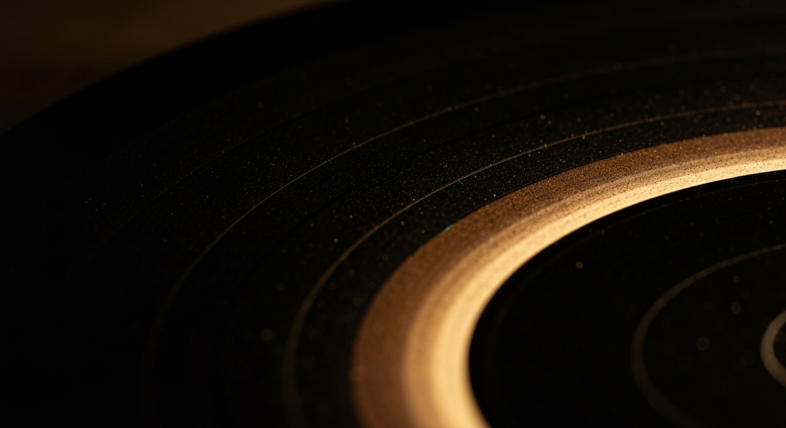

The carrier works. There is no music on it. Saying otherwise would be the first dishonest thing here.

A working reference implementation. An ordinary player plays the open song and steps over the sealed part. Round-trip tests pass, including the two that matter most: a wrong key is refused, and a tampered file is refused.
Any music. There is no mailing list either, because there is nothing yet to tell anyone about. When there is, it will appear here.
Zariia will specialise in compilations, made from recording sessions. Musicians and bands are invited, every now and then, and what comes out of the room becomes the record.
So a release is not a single artist's album that we happen to distribute. It is an occasion that several people turned up to, and the compilation is what that occasion left behind.
This is not an arbitrary house style. It is the same shape as everything else here. The work that has to be convened — four discs on four machines, twelve radios in a room, a garage full of car stereos — only exists while people are gathered, and a session is exactly that. It also gives the sealed channel something worth carrying: the open track is one pass through the room, and the second channel can be another take, a counter-voice, or what else was playing at the same time.
Sessions are occasional by design. Nobody is on a release schedule and there is no submissions process — being invited is the whole of it, and that is the same act as being handed a key.
No releases. No dates. No pre-orders.